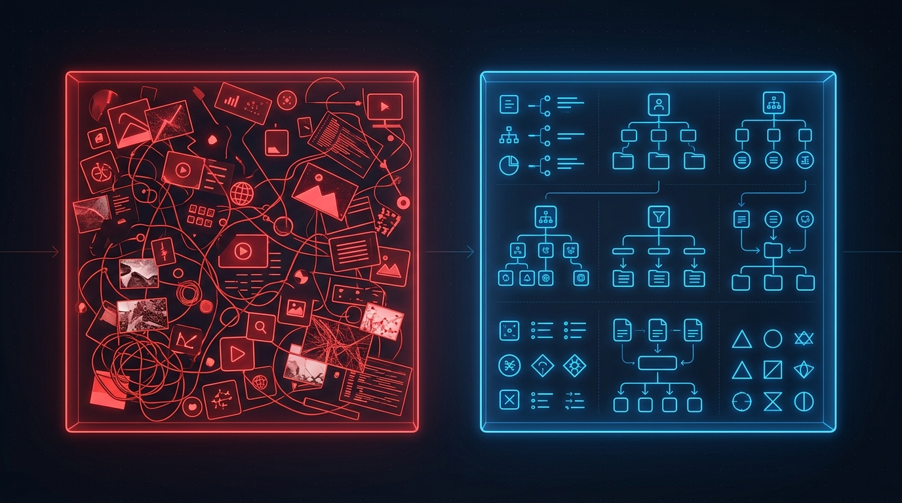

Every autonomous agent you've ever run was silently wasting thousands of tokens just finding the right file. Here is what is happening, and how we fixed it.
Scroll to follow the story
Act I · Situation
The agent needs to find before it can fix.
Every LLM operates inside a context window: a finite, precious workspace holding its instructions, logic, and working memory. When an agent is given a codebase to work on, it needs to locate the right files. The only tool it has is the file system itself.
Task intent
"Fix the auth bug"
Linux FHS
ls, cat, grep: one directory at a time
Context window
Fills up with useless paths & metadata

Act II · Complication
The death spiral is O(N).
In a 10,000-file repo, the agent runs thousands of ls and cat commands. Each call dumps more directory metadata into the context window. The actual task gets pushed out. The agent hallucinates. Your tokens are gone.
Plain English: Every time the AI looks inside a folder (ls) or reads a file (read), it wastes memory (tokens). If you have a huge project with thousands of files ($N$), the cost explodes linearly. The bigger the project, the more memory is wasted just searching.
This isn't theoretical. Move the slider and watch what a traditional FHS crawl costs in tokens compared to what the Semantic approach costs. One number stays flat.
Repository size1,000 files
Linux FHS Crawl
4,800
tokens consumed
Semantic FAISS
15
tokens consumed
Act III · Answer
We skip the maze. Teleport straight to the code.
Instead of crawling, the agent emits a natural language Intent Vector. A local FAISS index holds the entire codebase mapped into embedding space. A Cosine Similarity search finds the exact file in constant time, regardless of repo size.
Plain English: Instead of searching folder by folder, we convert what the AI wants into a math coordinate (Intent Vector). We do the same for all files. Then, we calculate the closest match instantly using Cosine Similarity. It takes one exact math operation, and zero crawling.
Constant \(\mathcal{O}(1)\) Time \(= 15\) tokens
100 files → 15 tokens20,000 files → 15 tokens
Act IV · Proof
The numbers don't lie.
Token expenditure on a log scale and multi-axis performance. The FHS approach grows without ceiling. The Semantic approach is a flat line at 15, dominating across all efficiency metrics.
This architecture is live in AI Council V7. The FAISS index runs locally. The MCP tooling wraps it. The agent never touches the directory tree again.